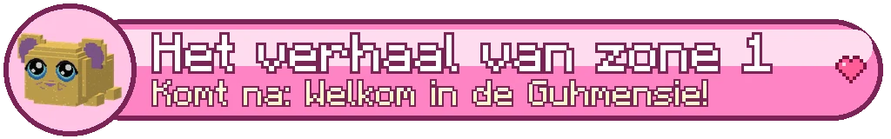
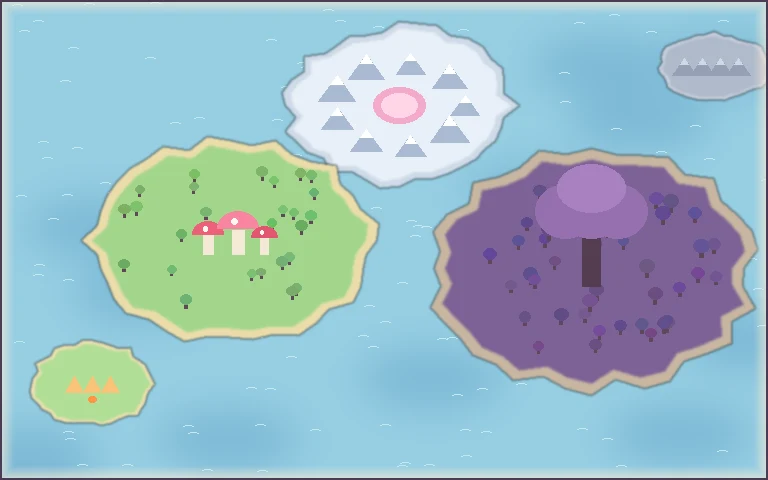

The story of the VadsrijkHet verhaal van het Vadsrijk
The world, its towns and how each story begins; never how it ends. The rest you discover in the game.De wereld, de steden en hoe elk verhaal begint; nooit hoe het afloopt. De rest ontdek je in het spel.

De Knuffelzwammen
Het Vadsrijk
Een eigen avonturenwereld vol klodders en zwammen. Word rekruut van De Knuffelorde, kies een klasse en vrolijk op wat grauw en knorrig is geworden. Je eigen spullen blijven veilig thuis.
De Vadsloosheid
Vroeger beschermde de grote roze draak Vahoegnir het rijk: waar hij vloog, bloeiden de bloemen. Nu is hij grauw, en waar hij langskomt worden wezens chagrijnig en verwelken de bloemen. Dat heet de Vadsloosheid. De Knuffelorde vrolijkt alles weer op: verslagen wezens worden niet verwond, ze ploffen roze en huppen blij weg.
Het verhaal van zone 1
Het hoofdverhaal (de gouden !) leidt je van Knuffelkamp naar Zwamzoet, langs de grauwe littekens van de draak, door de Klodderweide, het Sporenwoud en de Druipgrotten naar de Zwamtempel op de berg. Tussenfilmpjes lopen vanzelf; de gesprekken klik je door.
Knuffelkamp
Je komt bij zonsopgang per luchtschip aan op Knuffelkamp, het oefeneiland van De Knuffelorde. Praat met Sergeant Pluizebol, kies je pad bij het klasse-tempeltje, oefen op de trainingspoppen en ga even zitten bij het kampvuur...
Rustig, en dan...
Neem rustig de tijd in het kamp: praat met iedereen, vis met Visser Dobber of klim naar de vuurtoren voor het uitzicht op Zwamzoet. Als het kampvuur brandt en de zon opkomt boven het water, gebeurt er iets wat niemand verwacht.
Het luchtschip
Na je opleiding vliegt Kapitein Wolkewiet je naar De Haven van Zwamzoet. Stuurguh Zeppie vliegt je weer terug. Er is geen snelreizen: de kampvuren zijn je checkpoints.
Zwamzoet
De paddenstoelenstad van De Knuffelorde, met huisjes op reuzenhoeden, een markt, een smid, een stal en bovenop de hoogste zwam de ordetempel. Hier wonen guhs die je hulp goed kunnen gebruiken.
Wie woont er?
Grootmeester Vadsvoet in de ordetempel (klasse wisselen en de klassenproeven op level 10 en 20), Smid Hamerbol, Marktmeester Hamertje-Tik, Stalmeester Hoefje (je eerste rijdier rond level 8), Klerk Stempeltje bij het questbord, en een heleboel guhs met een probleempje: Oma Truus, Bakker Bram, Kleine Kiki, Dichter Daan, Professor Pluis en nog veel meer.
Quests en de questlog
Een gouden ! boven een guh is een verhaalquest, een gele ! een zijquest, een ? betekent: hier inleveren of even praten. Druk op J voor je questlog met je quests, je geheimen, de wezens die je opvrolijkte en de Avonturiersgids.
Soorten quests
Praten, wezens opvrolijken, spulletjes verzamelen (ze vallen vanzelf als je ze nodig hebt), een plek vinden, een kampvuur aansteken, een baas opvrolijken, een guh begeleiden die achter je aan loopt, en geheimen zoeken. Beloningen: xp, Vadsmunten en buit. In een groep tellen opvrolijk-quests voor iedereen in de buurt mee.
Het FTB-hoofdstuk
In het FTB-boek staat het hoofdstuk "Het Vadsrijk". Elke quest vinkt zichzelf af als je hem in het Vadsrijk inlevert. Niks staat op slot.
Geheimen van het Vadsrijk
Overal liggen geheimen: tien verloren knuffels van Kleine Kiki, verborgen schatten en vijf vreemde aanwijzingen. Ze glinsteren een beetje als je dichtbij komt. Waar leiden die aanwijzingen naartoe?
Glinsters
Hartjes = een verloren knuffel, goudgeel = een schat, paarse sterretjes = een aanwijzing. Je questlog (J) houdt bij wat je al gevonden hebt.
De Splinterpieken
De Splinterpieken (zone 2)
Een ijzig kristalgebergte vol echo's en sneeuw, voor avonturiers van level 20 tot 30. Na het verhaal van zone 1 vliegt Stuurguh Zeppie je vanuit De Haven naar Kandijkom. Hier versteent de Vadsloosheid wezens tot grauw kristal.
Erheen
Maak eerst het verhaal van zone 1 af en word level 20. Dan heeft Stuurguh Zeppie in De Haven een nieuwe luchtschiplijn: naar Kandijkom. De eerste vlucht vergeet je niet snel. Doe je sjaal om.
De gebieden
De Galmhellingen in het oosten (lv 20-23): sneeuwvelden met kristalnaalden die terugzingen. Het Bevroren Knuffelmeer in het westen (lv 23-26): knuffels onder het ijs, en het ijs scheurt. De Splinterkloof in het noorden (lv 26-29): hangbruggen en Mika-boorinstallaties. En op de hoogste piek: de Spiegelburcht.
Echte monsters
In de bergen vecht je tegen echte monsters van grauw kristal: verslagen spatten ze uit elkaar in scherven die wegsmelten. Mika's vluchten in een rookwolk naar huis. Guhs doe je nooit pijn: een versteende guh bevrijd je met een klik.
Kandijkom
Een warm stadje in een open reuzengeode van roze kwarts: chocomelkhuisjes met dikke sneeuwmutsen, guhs in gebreide truien, een schaatsvijver op het plein en een gondelbaan naar de toppen. De Kristalwacht bewaakt de poorten.
Wie woont er?
Cafébaas Mallow (chocomelk!), Burgemeester Kandij, Kapitein Kwarts van de Kristalwacht, Juweliersguh Glinster (edelstenen in je sokjes), Smid Gloeikool, Breister Wolwinter, Schaatsjuf Zwierig, Gondelguh Kabeltje, Ordemeester Kristalijn in het ordetempeltje (klasse wisselen en op level 30 je derde titel) en nog veel meer guhs met een winters probleempje.
Reizen
Kapitein Poolster vliegt je van Kandijkom terug naar De Haven. Met de gondel van Gondelguh Kabeltje ben je zo boven op de Galmhellingen.
Quests in de Splinterpieken
Het verhaal van zone 2 (de gouden !) leidt je van Kandijkom over de Galmhellingen en het Bevroren Knuffelmeer naar de Splinterkloof en de Spiegelburcht. Elke stap zegt bij wie en waar je moet zijn; rechtsboven en in je questlog (J) zie je altijd je volgende stap.
Zijquests
Een paar korte zijquests naast het verhaal: tien knuffels onder het ijs bevrijden, schaatsles op het plein, een echokoor met de zingende naalden, ijsbloemen voor de chocomelk en met de gondel naar de top.
Geheimen van de Splinterpieken
Tien knuffels zitten vast onder het ijs, vijf vreemde boorsporen wijzen naar iets wat diep in de berg bromt, en er liggen schatten op plekken waar je eigenlijk niet kunt komen. Ze glinsteren als je dichtbij bent.
Glinsters
Hartjes onder het ijs = een knuffel van Kleine Vlokje, paarse sterretjes = een boorspoor, goudgeel = een schat. Het FTB-hoofdstuk "Het Vadsrijk" heeft een eigen stukje voor de Splinterpieken; niks staat op slot.
De Schemerwortel
De Schemerwortel (zone 3)
Een boom zo groot als een berg, voor avonturiers van level 30 tot 50. Na het verhaal van de Splinterpieken vliegt het luchtschip je vanuit De Haven of Kandijkom naar Honingtak, een imkersstadje op een tak. Hier krijg je je eerste rijdier.
Erheen
Maak eerst het verhaal van de Splinterpieken af en word level 30. Dan vliegen Stuurguh Zeppie (De Haven) en Kapitein Poolster (Kandijkom) naar Honingtak. De eerste vlucht gaat langs de stam omhoog, door de wolken. Kijk goed.
De lagen
Bovenin de Kruinzee (lv 30-34), dan de Takkenbanen (lv 34-38), in de holle stam de Schorsstad (lv 40-43), op de grond de Wortelvelden (lv 43-46) en onder de boom het Wortelduister (lv 46-49). Er zijn twee kerkers: de Kaaszeppelinwerf en het Hart van de Boom.
Je Pluimguh
Bij Stalmeester Veertje in de Pluimstal kies je je eerste rijdier uit drie jonge Pluimguhs. Roep hem met X. Van hoge plekken zweef je met hem naar beneden; omhoog gaat met trappen, liften en de bloesemwind.
Honingtak
Een gezellig stadje op een reuzentak: bijenkorfhuisjes met raatgevels, de zoemende markt op het Bloesemplein, de Raattrossen die onder de tak hangen met café De Zoete Raat en de Nestkapel, en de Pluimstal waar de Pluimguhs wonen.
Wie woont er?
Imkermoeder Raatje (de burgemeester), Ordemeester Wasja in de Nestkapel (klasse wisselen en op klasse-level 50 je vierde titel), Stalmeester Veertje, Cafébaas Zoet, Jagersguh Raap met het premiebord, Smidguh Hamerhoning, Juweliersguh Glinsterhoning, Liftguh Katrolletje van de Honinglift en heel veel imkers met hoedjes en sluiers.
Het premiebord
Vanaf level 40 hangt er in de Jagershut elke dag een handvol premies: jagen, verzamelen, bezorgen en schimmel opruimen. Geen haast en geen ranglijst.
Quests in De Schemerwortel
Het verhaal van zone 3 (de gouden !) leidt je van de kruin over de takken en door de holle stam tot diep onder de wortels. Elke stap zegt bij wie en waar je moet zijn; rechtsboven en in je questlog (J) zie je altijd je volgende stap.
Zijquests
Een paar korte zijquests naast het verhaal: verdwaalde Pluimkuikens zoeken, Opa Bast nog één keer naar de top brengen, honingthee met moerasbloemen, slapende lichtjes wakker maken en vijf uitkijkpunten voor Lusje's kaart.
Geheimen van De Schemerwortel
Tien knuffels (drie alleen zwevend te bereiken), vijf vreemde imkersporen in Honingtak, vijf schatten en acht oude reliëfs van het boomvolk in de wand van de stam. Ze glinsteren als je dichtbij bent.
Glinsters
Hartjes = een knuffel, paarse sterretjes = een imkerspoor, goudgeel = een schat, wit licht = een reliëf van het boomvolk. Het FTB-hoofdstuk "Het Vadsrijk" heeft een eigen stukje voor De Schemerwortel; niks staat op slot. Je Verkenningsboek (B) houdt alles bij.